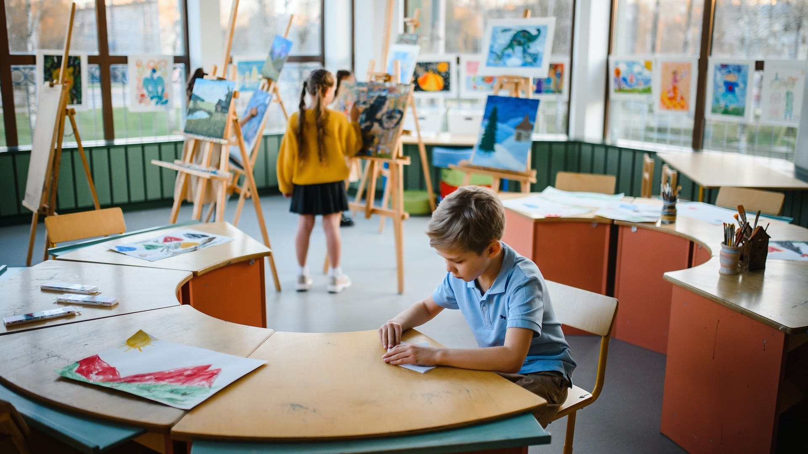

Primaria
Desarrollamos el pensamiento crítico, cognitivo y emocional
Turno Mañana
La mañana se inicia con el amanecer y finaliza al mediodía. De este modo, llega después de la madrugada y se extiende hasta que empieza la tarde.
Horarios
8:00 a 12:00
Turno Tarde
El turno vespertino es aquel que se desarrolla durante las horas de la tarde o después de la mañana. El término vespertino es un derivado del latín vesper.
Horarios
13:00 a 17:00
Actividades culturales, académicas y cognitivas
A nivel general, la noción de actividad alude al movimiento, el quehacer o el proceso vinculado a un cierto sector o ámbito. De este modo, puede hablarse de actividad laboral, actividad volcánica, actividad física, actividad cultural y muchas otras.
